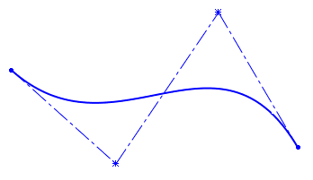
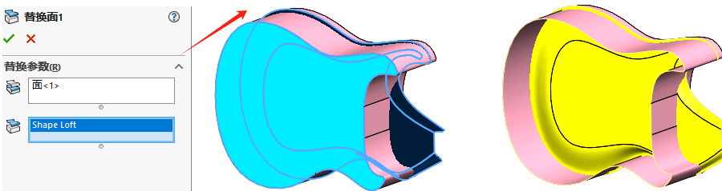

SOLIDWORK曲面教程
1理解曲面
1.1 实体与曲面
- 实体
- 边线
曲线的几种形式
| Bezier（样条曲线） | B-Spline（样式曲线） | NURBS |
|---|---|---|
| 贝塞尔曲线，又称贝兹曲线或贝济埃曲线，是应用于二维图形应用程序的数学曲线 | b样条曲线是指在数学的子学科数值分析里的一种特殊的表示形式。它是B-样条基曲线的线性组合 | NURBS是非均匀有理B样条的缩写，1991年，国际标准化组织（ISO）颁布的工业产品数据交换标准STEP中，把NURBS作为定义工业产品几何形状的唯一数学方法 |
| Bezier曲线的每个控制点对整条曲线都有影响，也就是说，改变一个控制点的位置，整条曲线的形状都会发生变化 | B样条中的每个控制点只会影响曲线的一段参数范围，从而实现了局部修改 | NURBS在Bezier与B-Spline的基础上，可以表示一些基本的曲线，比如圆。 |
|  |
Bezier曲线只是B样条的一个特例，而B样条又是NURBS的一个特例，它们的关系可以图示为：

SOLIDWORKS****中曲线样式的选择
1、在SW中样条曲线即为B-Spline曲线：B-Spline曲线控制柄贯穿曲线，适合通过控制点定义曲线形状，有利于参数化实现
2、样式曲线即为Bezier曲线：Bezier曲线控制柄不在曲线上方，曲线形状无法通过尺寸定义，不建议使用
1.2 使用曲面工作
1.2.1 检查曲面是否闭合
1、尝试【加厚】只有闭合曲面【从闭合的体积生成实体】选项才有效
2、使用【检查实体】可以高亮显示曲面的开环边线
3、检查【工具-选项-系统选项-颜色-曲面,开环边线】显示开环边
1.2.2 实体分解成曲面
1、使用【删除面】用“删除”方式，删除其中一个实体面
2、使用【等距面】选择实体表面等距为0的“复制面”的方式获得。
1.2.3 参数化
在SW中所有的曲面都可以通过一系列的参数化曲线网格来表示。通过【工具-草图工具-面部曲线】可以查看
1.2.4 曲面类型
- 代数曲面
- 直纹曲面
- 可展曲面
- NURBS曲面
1.3 使用曲面的原因
1.3.1 不宜使用曲面的情况
1.3.2 混合建模
1.4 连续性
不连续：
C0：
C1：
C2：
1.5 曲面操作流程
1.5.1 使用图片操作
1.5.2 规划草图
1.5.3 识别对称和边线
1.5.4 识别功能表面
1.5.5 频繁检查模型
1.5.6 FeatureManager设计树中的文件来
1.5.7 清除
2曲面入门
2.1 实体-曲面相似处
实体建模与曲面建模的相似处
2.2 基本曲面建模
【拉伸曲面】
【旋转曲面】
【扫描曲面】
【拉伸曲面】
【剪裁曲面】
【加厚】
【延展曲面】
注意不是延伸曲面
【使用曲面】
【插入-切除-使用曲面】
3实体-曲面混合建模
实体-曲面混合建模
3.1 混合建模
3.2 使用曲面编辑实体
方法1：利用曲面作为【拉伸实体】的“成型到面”的结束条件。

方法2：利用【插入-切除-使用曲面】可以切除曲面表面轮廓效果。
方法3：利用【替换面】可以将实体表面延伸移至曲面位置，并贴合曲面表面形状。
3.3 实体与曲面间的相互转换
使用【删除面】的“删除”方式，可以将实体模型转成开环的曲面实体。
利用【剪裁曲面】可以将剪裁形成的封闭曲面，创建实体转换成零件实体模型。
当然，利用【缝合曲面】创建实体，也可以将封闭的曲面实体缝合转成零件实体。
3.5 将曲面作为构造几何体
【旋转曲面】
【扫描曲面】
【交叉曲线】
选择两曲面后，点击【工具-草图工具-交叉曲线】获得两曲面之间交叉的曲线段（这会使用3D草图作为交叉曲线的载体对象）。
【特征扫描】+【圆周阵列】或者如下造型
3.6 替代剪裁、缝合与加厚
【相交】
3.7 面的复制
从现有曲面上【复制面】获得用于剪裁的面，利用复制的面做【剪裁曲面】修建模型的形状。
4修补与编辑
4.1 输人数据
4.1.1 输人数据的类型
4.1.2 输人数据出错的原因
4.1.3 数据出错引发的问题
4.1.4 修补模型
4.1.5 操作流程
4.1.6 处理流程
4.1.7FeatureWorks
4.2 修补与编辑
4.2.1 删除面的选项
4.2.2 修补缺口
4.2.3 一致性通知
4.2.4其他策略
4.2.5编辑输人的零件
5高级曲面建模
5.1 操作流程
5.2 直纹曲面
5.3 放样曲面
放样曲面
5.3.1 添加放样截面
5.3.2非主流方式
5.4零件下半部分的建模
5.4.1 曲面填充前的准备
5.2.2一致性通知
5.4.3 误差分析
5.4.4 缝隙控制
5.5 结论
【平面曲面】
【缝合曲面】
【镜像】
5.6 设计更改
5.6 动态修改特征
5.6.1 动态修改特征
5.6.2替换面
6接合与修补
6.1 复杂的接合
6.1.1 操作流程
6.1.2 分割剪裁边界
6.1.3 偏差累积影响
6.1.4 镜像作用
6.1.5 隐藏/显示实体
6.1.6 剪裁管件“Bottom Bracket”
6.1.7 包覆特征
6.2 光滑修补
6.2.1 三个可选方法
6.2.2 边界曲面
6.2.3曲率梳.
6.3自由形特征
6.3.1 网格方向
6.3.2 使用三重轴移动控制点
6.3.3 移动控制点
6.3.4 撤销更改
6.3.5 边界条件
6.4 边角融合
6.4.1 操作流程
6.4.2 可选方法
6.4.3 曲面上的样条曲线
7主模型技术
7.1 关于主模型的介绍
7.1.1 传递曲线数据
7.1.2 推动与牵引类型的作用
7.1.3 命名实体
7.1.4 列举父级配置
7.1.5 分割特征
7.1.6 建议总结
7.2 曲面主模型技术
7.3 实体主模型的应用
7.3.1 分割零件
7.3.2 按键区建模
7.3.3塑料零部件专有特征
7.3.4装配凸台
7.3.5接缝
7.3.6弹管扣凹槽
7.3.7 保存实体并生成装配体
其他
曲面展平
“曲面展平”功能仅适用于 SOLIDWORKS® Premium。